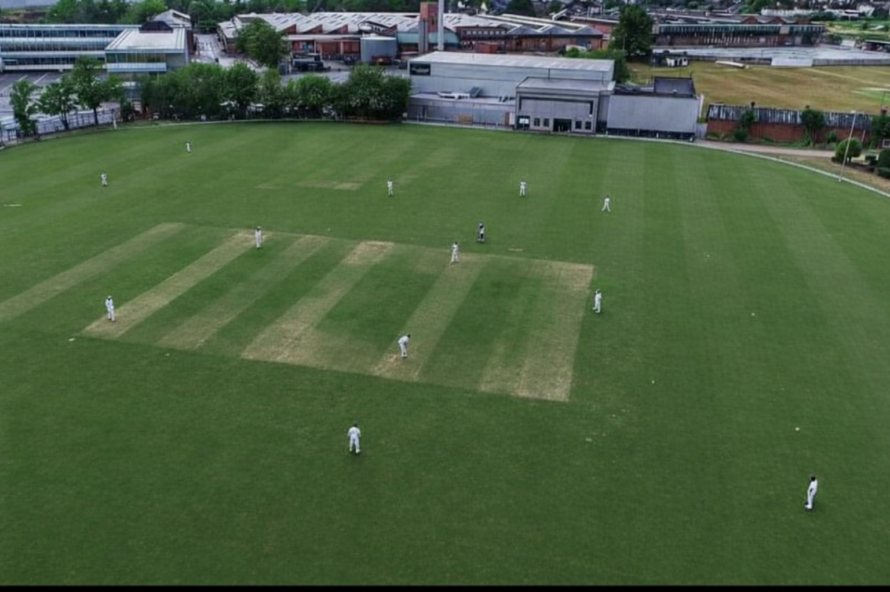
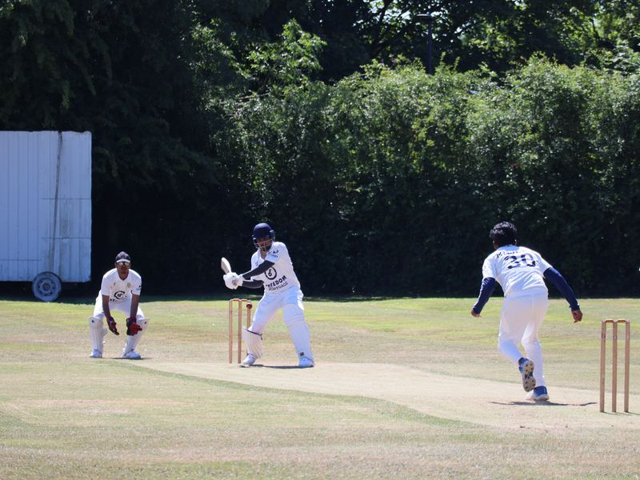

Home Ground
Our home ground hosts league and friendly fixtures through the season. The surface is maintained to provide a consistent playing experience for batters and bowlers, with enough space around the boundary for safe fielding.
Victory Cricket Club provides quality facilities that support both competitive cricket and player development. Our venue setup is focused on safe training, match-day readiness, and an enjoyable club environment.

Our home ground hosts league and friendly fixtures through the season. The surface is maintained to provide a consistent playing experience for batters and bowlers, with enough space around the boundary for safe fielding.

We use dedicated nets for technical sessions and match preparation. Structured net practice helps players improve shot selection, bowling control, and wicketkeeping skills across all teams.
Weekly training is planned by team management to ensure fair access to nets and match preparation areas. Junior, women’s, and men’s sessions are scheduled to support development pathways across the club.
If you would like to enquire about bookings or availability, use the Book Facility option in the top menu.